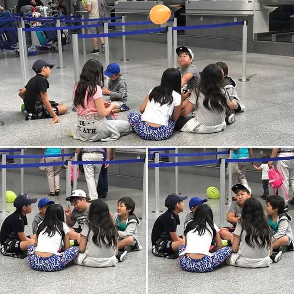
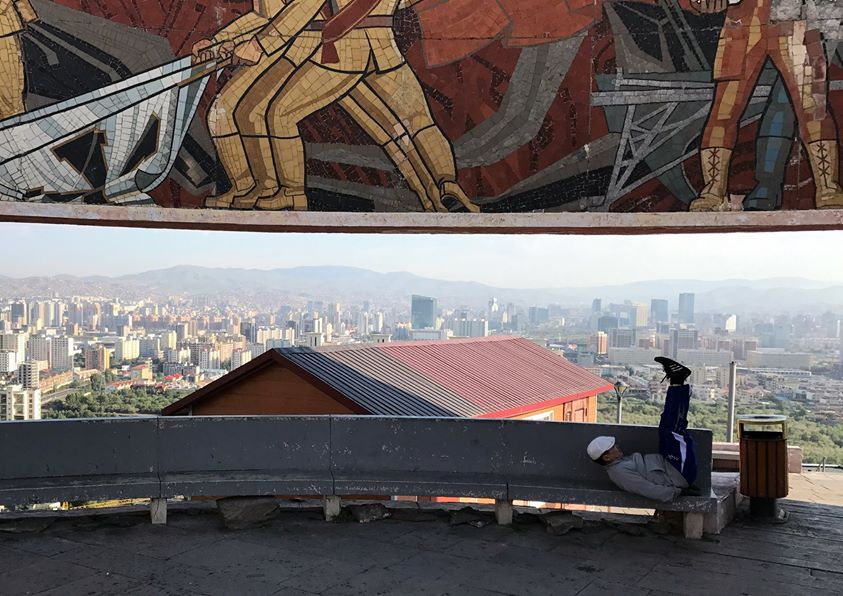
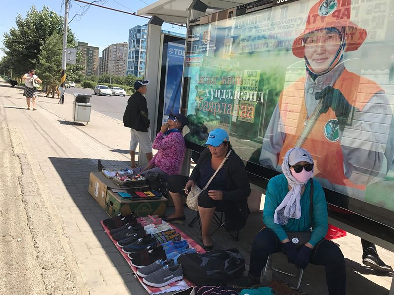
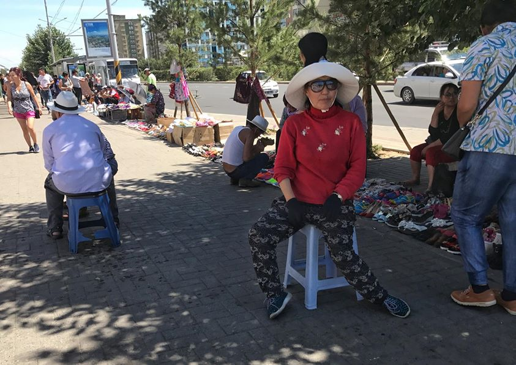

Mongolsko - Ulánbátar léto 2017
V létě 2017 jsem se vydal na dlouhou cestu kolem světa. Přibližně polovinu mongolského času jsem strávil v hlavním městě Ulánbátaru.
Po mnoha měsících příprav a přemýšlení je tu Den D! Po prodeji auta, odevzdání bytu, rozvázání všech možných smluv (s výjimkou UPC, kde to tipuji ještě na pár let) můžu vyrazit na druhý konec Eurasie. U sebe mám jen něco kolem 5 kg věcí (a tak ⅓ vezu zbytečně), které s výjimkou iPhone a staršího MacBooku nemají žádnou hodnotu.
Proč je na začátku Mongolsko? Prostě to byla první země, kterou jsem v danou chvíli zrovna na mapě viděl, a tak jsem si do ní koupil letenku. Všechny mé nejlepší cestovatelské zážitky pocházejí z míst, kam jsem se dostal náhodou. Být spontánní, rozhodovat se na posledních chvíli, plánovat jen to nutné, chaos. Opak toho, co znám běžně.
Na jak dlouho? Nevím. Jednoho dne přijde okamžik, kdy se mi ráno už nebude chtít do dalšího místa cestovat a pak se vrátím. Jestli to bude za dva měsíce, za půl roku, za rok, za dva nemám tušení. Říkám, že je to cesta kolem světa, protože dál už cestovat nejde (samozřejmě dokud Elon Musk nezačne prodávat letenky na Měsíc).
Takže Mongolsko, co na mě chystáš?
Už na letišti ve Frankfurtu jsem si všiml, že Mongolsko bude tak trochu jiná země. Oproti ostatním vzorně čekajícím dětem z jiných zemí se všechny mongolské děti usadily na zemi a začaly si hrát pod dohledem Big Bosse (nejtlustší z dětí).

Před cestou do Mongolska jsem si toho o něm vlastně moc nezjišťoval, protože jsem líný. Osud mi byl nakloněn a v letadle vedle mě posadil Nomin, která mi sedmihodinovou cestu zkrátila vypravováním o Mongolsku. Musím říct, že je tohle je mnohem lepší než číst různé průvodce Lonely Planet.
Hned po příletu jsem zamířil na vyhlídku Zaisan, měl jsem tam totiž velký úkol. Cesta vedla kolem pána, který nacvičoval, jak se vzdát před tankem.
Dvě fotky. Na té spodní jsem já a současný Ulánbátar. Na té horní je můj otec (v bílem kabátu) a Ulánbátar před 46 lety. Otec se zde byl jako hudebník a seznamoval se zde se svou ženou, mojí mámou, která zde byla jako folklorní tanečnice. Maminka si bohužel vybrala trochu nešťastně pro focení místo s hákovým křížem, takže fotka není úplně prezentovatelná, ale alespoň jsem to podle něj snadno našel.
A ještě jednou z vyhlídky Zaisan, tentokrát s relaxujícím Mongolem.

Znáš ne ten pocit, když si najdeš skvělý místo pro jurtu, ale někdo ti tam už postavil panelák? V Mongolsku žádný problém.
Ještě jednou Ulanbátar ze Zaisanu. Tentokrát jakože umělecká fotka.
Společně se svou hostitelkou Mashou jsme vzali staré fotografie a vydali se hledat místa, ze kterých byly foceny. S hledáním pomáhali i okolní mniši …
… takže jsme našli další místo ze staré fotky…
… a další místo.
Když už jsem zmínil Mashu, to je holka, u které společně s její rodinou bydlím. Než jsem přijel do Mongolska, prošel jsem si všechny profily z couchsurfingu a AirBnB, abych našel nejzajímavější osobu, u které bydlet.
A bylo to skvělé rozhodnutí, bydlím tady nesmírně rád. Za to, jak hezky se o mě stará, jsem ji pouštěl videa s českými prezidenty (Vaclava Klause a krádež protokolárního pera a Miloše Zemana a korunovační klenoty). Byla nadšená, viděla už skoro všechno, ale tohle ještě ne.
V jednom z podobných paneláků bydlím. Máma zde byla před těmi mnoha roky, takže mi neustále tvrdila, že Mongolové v bytech zapalují na podlaze ohně, když si chtějí něco ohřát, protože takhle jsou zvyklí z kočovných dob. Bylo těžké ji vysvětlit, že za těch 46 let se to trochu změnilo.
Když chceš mít dvoupatrový byt v paneláku, tak žádný problém, prostě uděláš v balkonu díru a spojíš oba byty žebříkem.
Čingischánovo náměstí.
Kuk!
Momentky z Ulánbátaru.
Momentky z Ulánbátaru.
Momentky z Ulánbátaru.

Momentky z Ulánbátaru.
Momentky z Ulánbátaru.

Dvě děti, ale jen jedny kolečkové brusle. Tady žádný problém.
Dost bylo Ulánbátaru. Je čas vyrazit na venkov. Koupil jsem si tedy lístek na sever k jezerům a vyrážím za dobrodružstvím!
Chvíli po výjezdu autobus zastavuje na krajnici. Řidič něco řekne do mikrofonu a všichni si zapínají bezpečnostní pásy. Řidič vytahuje na palubní desku lékárničku. Vím, že jde do tuhého!